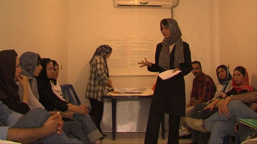

پذيرش > تریبون > گزارش كمپين > گرگان برای کمپین، کمپین برای گرگان
 گزارشي از كارگاه آموزشي گرگان: گزارشي از كارگاه آموزشي گرگان:

 گرگان برای کمپین، کمپین برای گرگان گرگان برای کمپین، کمپین برای گرگان
14 آبان 1385 - ایمان مظفری - نسخه قابل چاپ
هفته ی گذشته برای گرگانی های عضو کمپین جمع آوری یک میلیون امضاء برای تغییر قوانین تبعیض آمیز، هفته ی موفقی بود.
شاید از آن جهت که اعضای کمپین گرگان، فکر نمی کردند استقبال آنچنان خوبی از کمپین شود و شاید هم به این علت که در تصورشان نمی گنجید، بتوانند امضاهای زیادی را جمع آوری کنند.

در دو یا سه ماه گذشته بود، که گروه کوچکی با 5 تا 7 نفر عضو، به نام مطالعات زنان، تصمیم گرفت تا علاوه بر کار مطالعات فمینیستی، بر روی یک پروژه ی اجرایی نیز کار کند.
تقارن کار کمپین دقیقا همزمان با این تصمیم گروهی بود. واقعیت آن است که پیش از این آنها به این نتیجه رسیده بودند که می بایست یک برنامه ی عملیاتی برای توده ها داشته باشند.
فعالیت ها آغاز شد. ارتباط با برخی از فعالان کمپین در مرکز کمک شایانی به پیشرفت پروژه در گرگان کرد.
البته واقعا دوستان گروه مطالعات نمی دانستند که نقطه ی آغازین جمع آوری امضاء کجاست و این در حالی بود که انبوه بی شماری از سئوالات حقوقی هم پیش روی آنان بود.
اما استراتژی که انتخاب شد، همان حرکت در میان اعضایی بود که در دایره ی اعتماد افراد وجود داشتند. تمام اعضاء به این اتفاق نظر رسیدند که حلقه دوستان و بستگان بهترین حلقه های آغاز به کار کمپین است.
به جرات باید گفت که این پروژه در گرگان عملا با فعالیت 4 نفر آغاز شد. اگر چه تعداد کم بود، اما مهمترین ویژگی اش این بود، که همگی به این نقطه رسیده بودند که باید کاری کرد.
جلسات پیگیری و هماهنگی همچنان پیش رفت. در ابتدا کار سخت به نظر می رسید. چرا که در حین جمع آوری امضاء سئوالات امضاء کنندگان زیاد بود و همگی دوستان نیازمند آن بودند که نسبت به برخی از مسایل آگاهی های خود را ارتقاء دهند.
رسیدن به این احساس نیاز، خود منجر به آن شد تا به فکر برگزاری کارگاهی برای کمپین بیفیتند. همینطور در طول سه ماهی که گذشت دایره ی 4 نفر به 11 نفر افزایش پیدا کرد و این احساس نیاز بیشتر لمس می شد که نیازمند آموزش هستند.
اما مشکلاتی وجود داشت. اول از همه اینکه، این جمع که بیشتر روند فعالیت هایشان به صورت غیر رسمی بود، مکانی برای برگزاری کارگاه نداشتند و در کنار همه ی اینها، اصلا پشتوانه ی مالی برای برگزاری یک کارگاه کوچک را هم دارا نبودند.
برای مکان کارگاه، اعضاء تصمیم گرفتند هر یک با دوستان خود در انجمن های دیگر، تماس بگیرد و برای یک کارگاه 5 تا 6 ساعته، از مکان انجمن آنان استفاده کند.
اما مسئولان انجمن ها که وقتی متوجه می شدند کارگاه برای چه موضوعی قرار است برگزار شود، هر یک بهانه هایی می آوردند. یا وقت نداشتند، یا هیات مدیره انجمن موافق نبود و یا اینکه بعضی ها واقعا امکان در اختیار گذاشتن انجمن را به غیر نداشتند.

در این میان، از آنانی که بیشتر توقع می رفت، بی مهری بیشتری دیده شد. به خصوص یکی از آنها که فردی صاحب نام و نشان در جریان روشنفکری گرگان و ایران است و بچه ها فکر می کردند دفتر مطالعاتی اش را در گرگان برای این کار اختصاص دهد. مقالات و سخنرانی هایش زیاد در این ور و آن ور دیده می شود. اما شاگردان او که به قول معروف «کاسه ی داغتر از آش هستند» از در اختیار قرار دادن آن مکان به این گروه کوچک برای برگزاری کارگاه امتناع کردند.
بالاخره کانون دوستداران کتاب، به عنوان آخرین امکان، مورد توجه دوستان قرار گرفت و خوشبختانه با پاسخ مثبت دست اندرکاران مواجه شد.
بالاخره بعد از مشقت های زیاد در هماهنگی کار ها و جمع آوری برگه های امضاء شده، گرگان میزبان زهره، سارا، جلوه و مریم بود تا همه چیز برای شکل گیری یک کارگاه موفق مهیا شود.
در باور دوستان کمپین گرگان هم نمی گنجید که 22 نفر از فعالان گرگانی، به عنوان اعضای فعال وارد کارگاه شوند و با جدیت مسایل را پیگیری کنند.
این موفقیت بزرگی به شمار می رفت و امیدها و انگیزه های جدیدی را برای کمپینی های گرگان به وجود آورد.
وجود برخی از مهره های تاثیر گذار شهری گرگان از نقاط جالب توجه کارگاه گرگان بود. نیروهایی که می توان از حلقه ی اعتماد آنها در میان فعالان اجتماعی و سیاسی بهره های زیادی برد تا بتوانند موضوعات کمپین را در میان طیف های خاصی از فعالان گرگانی به جریان اندازند.
در مجموع دو گروه از نیروها در کارگاه گرگان قابل شناسایی بودند:
عده ای که به کمپین نگاهی توده وار داشتند. این عده کسانی هستند که فعالیت هایشان به هیچ وجه در چارچوب محیط جغرافیایی یا فرهنگی خاص نمی گنجد. آنها حاضرند در هر شهر و هر موقعیتی به جمع آوری امضاء بپردازند. وقتی متوجه می شدید در امضای برخی از برگه ها، زنانی دیده می شوند که در حد سیکل سواد دارند یا حتی بی سواد بوده اند و اثر انگشت آنها بر روی برگه نقش بسته است، متوجه می شدید که این افراد با زحمت زیادی به گفت و گو با توده های مردم نشسته اند. یکی از فعالان که عریضه نویس دادگستری است، از تجربه هایش می گوید، که وقتی زن بی سوادی به او مراجعه کرده بود تا دادخواست طلاق همسر معتادش را ارائه دهد، چگونه او را متقاعد کرد که به این کمپین بپیوندد و به او فهماند که این کارش، موجب خواهد شد تا دختران آینده اش مشکلات حقوقی او را نداشته باشند.
عده ای که به کمپین نگاهی نخبه گرایانه دارند. این عده بیشتر مایل هستند تا امضاء ها از میان گروه های سیاسی و اجتماعی مختلف شهر گرگان جمع آوری شود. نگاه آنها به تغییر در سطوح نخبه ی جامعه است و حرکت در این فضا را سهل تر و موثر تر می پندارند. آنها در محافل ادبی، فلسفی، سیاسی، اجتماعی و ... فعالیت های چشمگیری دارند و بیشتر مایل هستند تا این امضاء ها از این سطوح جمع آوری شود. نگاهی به برگه ی امضاء ها و نام های آشنای طیف های سیاسی و اجتماعی در شهر گرگان هر یک نشان می داد که تا کنون این کمپین با موفقیت توانسته است در این لایه از اجتماع شهر گرگان نفوذ کند.
اما با همه این ها، هنوز شهر گرگان نیازمند آن است که ارتباط بیشتری را با توده های مختلف مردم برقرار کند و مسایل را بهتر جریان سازی کند.
طبیعی است که برخی از موانع و مشکلات جدی هم بر سر راه است. از جمله نداشتن دفترچه ی مربوط به کمپین. هر چند برای این رفع این موضوع، همان هسته ی پنج نفره ی کمپین گرگان در تلاش هستند تا با رایزنی های خود اسپانسرهای مالی برای تكثير دفترچه ها را شناسایی کنند، اما هنوز موفقیتی در این مسیر کسب نشده است.
گرگان همچنان معتقد است که می تواند خیلی بهتر از آنچه که اکنون هست، از پتانسیل های خود استفاده کند. اما تصور می کنم با توجه به شرایط موجود، کمپین گرگان باز هم موفق بوده است. آنچنان که بعد از برپایی کارگاه آموزشی هم، همچنان بازتاب های آن به هسته ی پنج نفره ی اعضای کمپین گرگان منعکس می شود.
بی تردید می توان گفت، گرگان همچنان به کمپین آری می گوید.
ارسال به
بالاترین
،
توییتر
،
فریندفید
،
فیسبوک
در همين بخش :
 دهمین دورۀ مراسم تندیس صدیقه دولت آبادی ۱۳۹۲ دهمین دورۀ مراسم تندیس صدیقه دولت آبادی ۱۳۹۲
کارت پستالهایی به بهانهی هشت مارس و به یاد همهی مبارزین راه برابری
بیانیه بیش از 350 تن از مدافعان حقوق زنان به مناسبت روز جهانی زن؛ زنان هر روز فرودستتر میشوند
لباسی که برای تن ما دوخته اند! /اعظم بهرامی
چالشها و چشمانداز فعالیت مدنی زنان
ديگر بخش ها :
طرح یک میلیون امضا
|
مقالات
|
سایت نوشته ها
|
اخبار
|
گزارش كمپين
|
گفت و گو
|
علیه سکوت
|
كوچه به كوچه
|
نامه های شما
|
گزارش ویژه
|
گفتگو با اعضا
|
ویژه سالگرد کمپین
|
تصویر برابری
|
دل آرام علی
|
تریبون
|
مقالات
|
تاریخ شفاهی
|
خارج از چارچوب
|
کتابخانه
|
درباره کمپین
|
کمپین در شهرها
|
کمپین در بند
|
صدای تغییر
|
ویژه 22 خرداد
|
لایحه حمایت از خانواده
|
گالری
|
عشا مومنی
|
امیر یعقوبعلی
|
خدیجه مقدم
|
راحله عسگری زاده و نسیم خسروی
|
پروین اردلان،جلوه جواهری، مریم حسین خواه، ناهید کشاورز
|
زینب پیغمبرزاده
|
سعیده امین، سارا ایمانیان، محبوبه حسین زاده، ناهید کشاورز و همایون نامی
|
احترام شادفر
|
نسیم سرابندی زاده،فاطمه دهدشتی
|
وبلاگ مهمان
|
پرونده خرم آباد
|
دستگیری ها
|
مریم مالک
|
پرستو اللهیاری
|
مهرنوش اعتمادی
|
سمیه رشیدی
|
Other Languages
|
همراهان
|
«فراخوان کمپین ده روز با بهاره هدایت»
| English
|